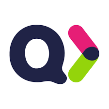

About Me
Hello! I'm Emre Küçük, a developer with a deep passion for the world of software. For me, problem-solving, algorithms, and coding are not just tasks but enjoyable challenges that keep me motivated.
I have experience in Java, C++, and Python, and I have developed various projects using these languages. I continuously improve my skills in object-oriented programming, data structures, and algorithms.
Additionally, I enjoy exploring new technologies and staying up to date with the ever-evolving software industry. My goal is to create user-friendly and efficient software solutions while constantly improving myself to take on even better projects. If you're interested in working together or learning more about my projects, feel free to reach out!
What I'm Working On
Pursuing development in data and programming foundations for AI.
Modern software design for general purposes.
My Experiences
Information Technologies Intern
Quick Sigorta General Directorate
July 2024 - September 2024
Worked as an IT intern, contributed to projects.
Skills